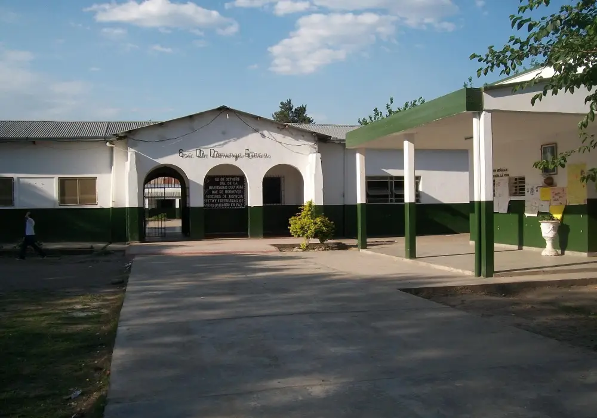
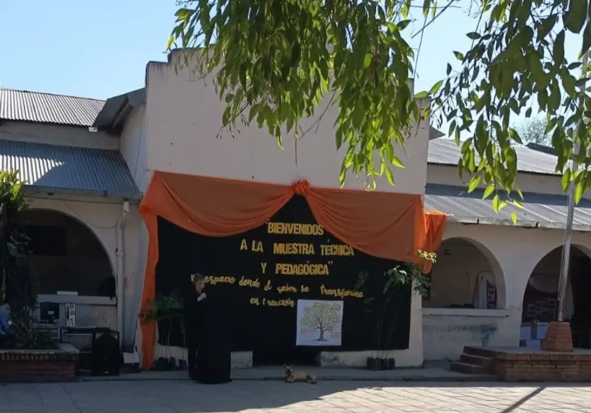
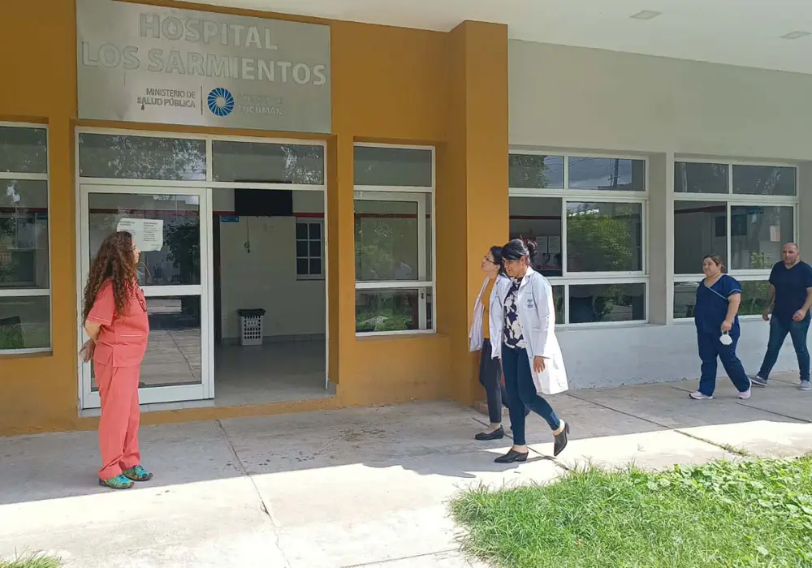
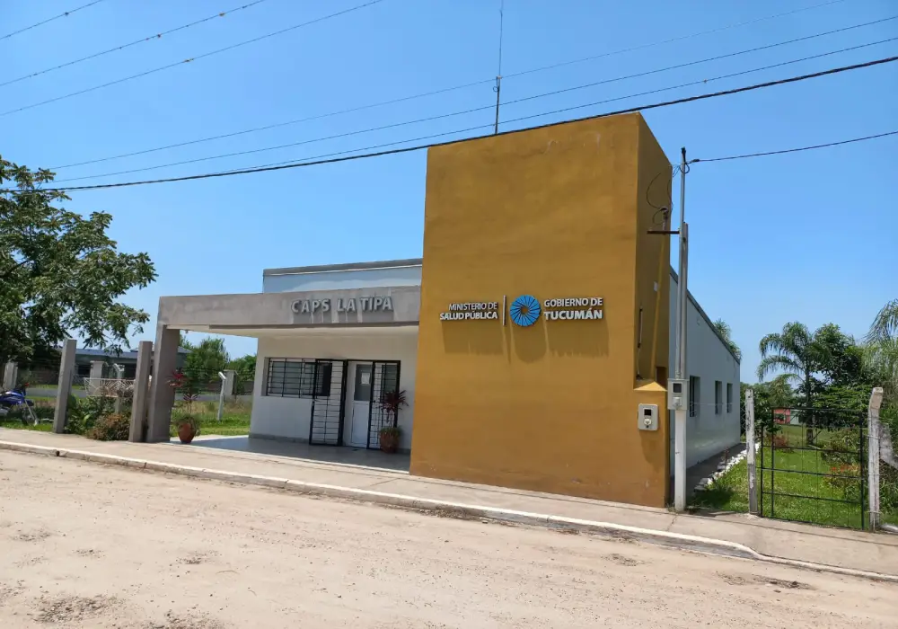
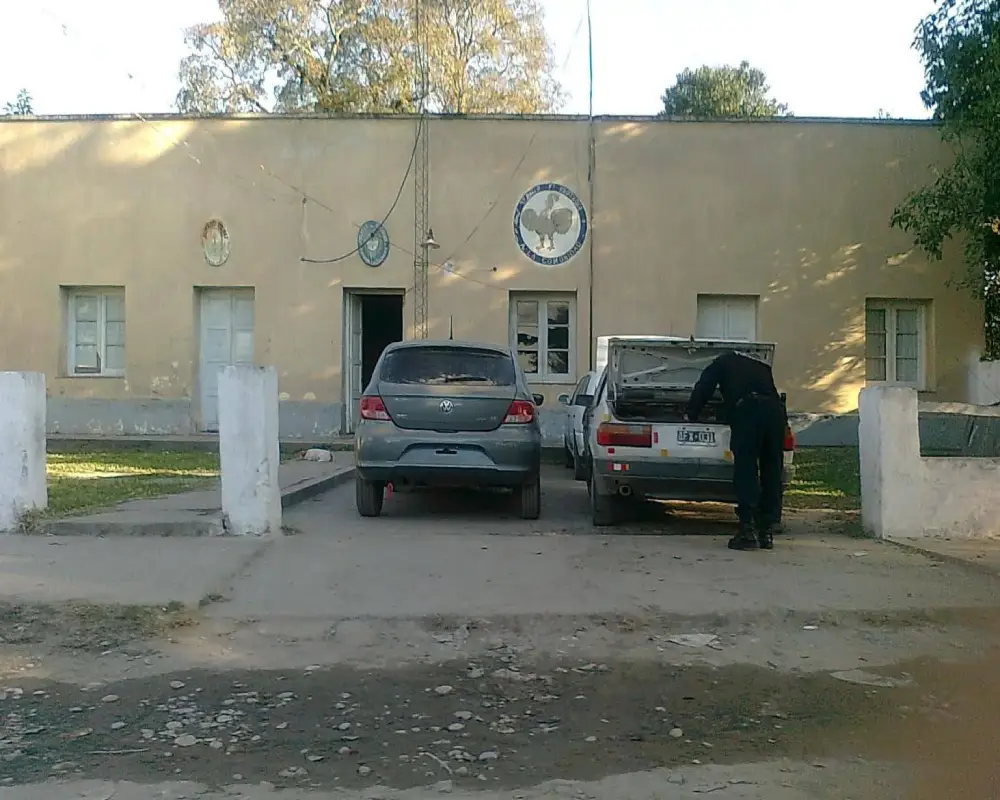
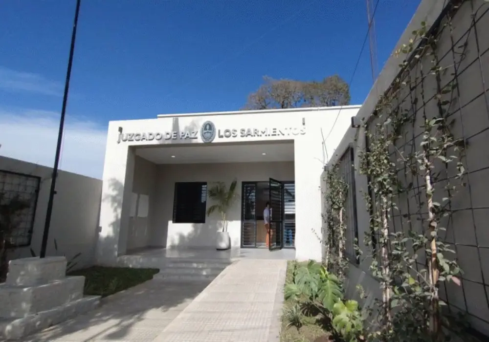
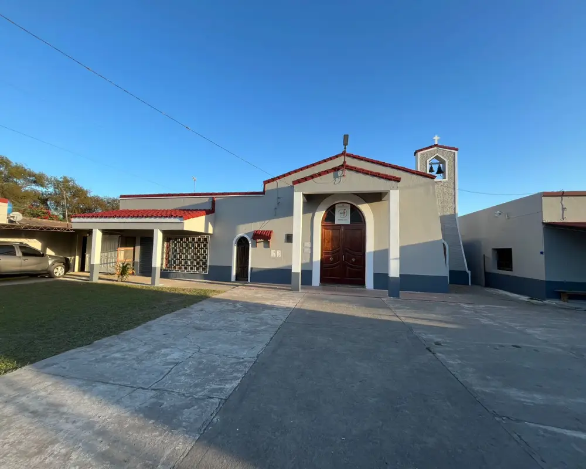
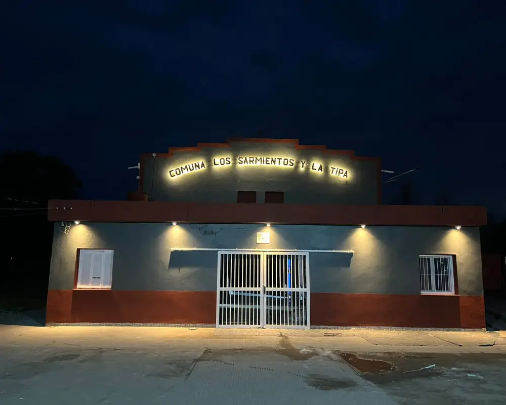

Escuela Primaria "Domingo Garcia"
*Dirección: Calle 9 de Julio S/N - Los Sarmientos - Dto.: Río Chico
Escuela Gdor. Dr. Domingo García es una institución pública de nivel primario que lleva décadas recibiendo a niñas y niños de Los Sarmientos y zonas aledañas, convirtiéndose en un punto de referencia cotidiano para muchas familias de la zona.
Haga click aqui para conocer su ubicaciónFoto: Cortesia de "You Tube En Los Sarmientos" - Facebook.

Escuela "Agrotécnica Los Sarmientos"
*Dirección: Calle 9 de Julio S/N - Los Sarmientos - Dto.: Río Chico
Es una institución educativa secundaria con orientación agraria de jornada completa. Se trata de una propuesta pensada para adolescentes y jóvenes que buscan una formación secundaria vinculada al trabajo en el campo y a la producción agropecuaria, combinando materias generales con espacios de taller y prácticas específicas del sector rural.
Haga click aqui para conocer su ubicación
Escuela Primaria "Alfonsina Storni"
*Dirección: Ruta N°331 KM 13 - La Tipa - Dto.: Río Chico
La Escuela Alfonsina Storni es una institución educativa pública ubicada en la localidad de La Tipa, en la provincia de Tucumán, que cumple un rol clave para las familias de la zona al ofrecer educación básica a niños y niñas de la localidad.
Haga click aqui para conocer su ubicaciónCortesia: Esc. "Alfonsina Storni" - Facebook.

Hospital Los Sarmientos
Dirección: Calle 9 de Julio S/N - Los Sarmientos - Dto.: Río Chico
Servicios y Prestaciones:
*Atención médica general y ambulatoria.
*Guardia médica.
*Especialidades como pediatría, ginecología, odontología y clínica general
*Servicio de laboratorio y gestiones para muestras derivadas al Hospital de Aguilares.
*Programas de salud comunitaria y provisión de medicamentos.
Haga click aqui para conocer su ubicación
CAPS Jesús Guerrero - La Tipa
*Dirección: Ruta N°331 KM 13 - La Tipa - Dto.: Río Chico
Brinda atención médica integral, control y prevención.
Haga click aqui para conocer su ubicación
Comisaria Los Sarmientos
*Dirección: Calle 9 de Julio S/N - Los Sarmientos - Dto.: Río Chico
*Teléfono de contacto: 3865494010
*Jurisdicción: Depende de la Policía de Tucumán bajo la órbita de la Unidad Regional Sur.
Haga click aqui para conocer su ubicaciónFoto: Cortesia de "You Tube En Los Sarmientos" - Facebook.

Juzgado de Paz
*Dirección: Calle 9 de Julio S/N - Los Sarmientos - Dto.: Río Chico
*Teléfono: 3815541588
*Correo electrónico: jpsarmientos@justucuman.gov.ar
Pertenece a la Justicia de Paz de Tucumán del Poder Judicial.
Haga click aqui para conocer su ubicación
Parroquia San Isidro Labrador - Los Sarmientos
*Dirección: A. Sarmiento (S/N) - Los Sarmientos - Dto.: Río Chico
*Fiestas patronales: Se celebran cada 15 de mayo en honor a San Isidro Labrador, reuniendo a una gran cantidad de fieles de la zona y pueblos vecinos.
Haga click aqui para conocer su ubicaciónFoto: Cortesia de Elio Pucheta.

Comuna Los Sarmientos
*Dirección: Calle 9 de Julio S/N - Los Sarmientos - Dto.: Río Chico
*Teléfono: 3865255927
*Correo electrónico: comunalossarmientos905@hotmail.com
Prestan servicios generales de la administración pública que incluye el desempeño de funciones ejecutivas y legislativas de administración por parte de las entidades de la administración central, regional y local.
Haga click aqui para conocer su ubicaciónFoto: Cortesia de Elio Pucheta.